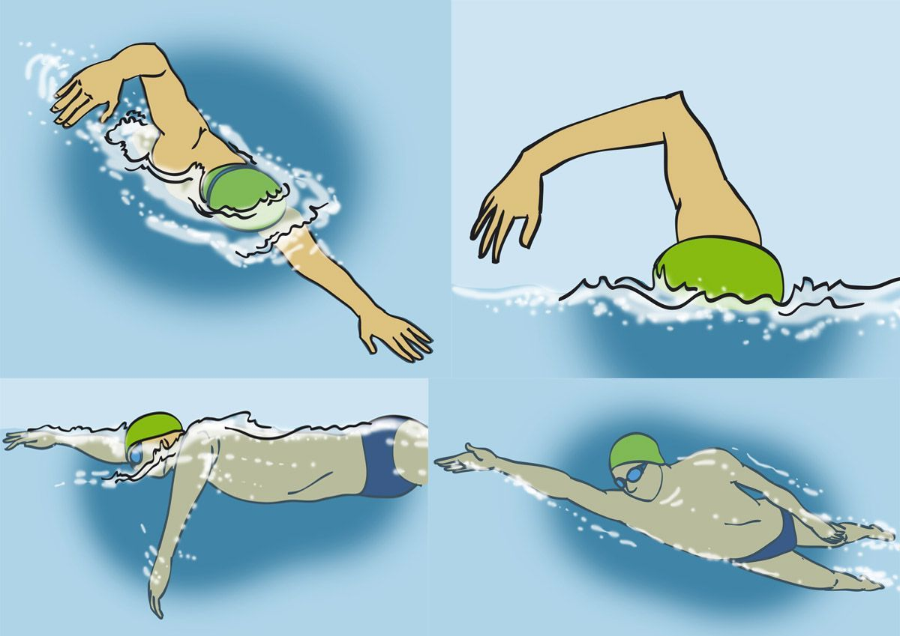
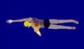
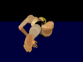
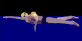

Estilo Crol

Desde el punto de vista del lugar donde se celebra:
- Piscina Corta - 25 m
- Piscina Larga - 50 m
- Aguas Abiertas
Tipos básicos de competición:
- 50 m. libres
- 100 m. libres
- 200 m. libres
- 400 m. libres
- 800 m. libres
- 1500 m. libres
- Relevos 4 x 50 m. libres
- Relevos 4 x 100 m. libres
- Relevos 4 x 200 m. libres
Descripción:
El crol o crawl es un estilo de natación. Este estilo es de forma alternada, mientras uno de los brazos del nadador se mueve en el aire con la palma hacia abajo dispuesta a ingresar al agua, y el codo relajado, el otro brazo avanza bajo el agua. Las piernas se mueven arriba y abajo, puesto que el estilo ha evolucionado.
Es el estilo de natación más rápido, debido a que la acción alterna los brazos, apoyada por un batido constante de las piernas, y produce una fuente continua de propulsión.
  
(Información obtenida de la Wikipedia. Url: https://es.wikipedia.org/wiki/Crol#Historia)
En Construcción
Tutoriales encaminados a mejorar la técnica del Viraje en estilo crol:

Tutoriales encaminados a mejorar la técnica de salida estulo Crol:

Mejores marcas:
Reglamento de Natación - RFEN
Normativa relativa a Crol:
N.4 LA SALIDA
N.4.1 La salida para las carreras de Estilo Libre, Braza, Mariposa y Estilos Individual, se efectuará por medio de un salto. Cuando el Juez Árbitro dé un silbido largo (N.2.1.5), los nadadores subirán a la plataforma de salidas y permanecerán allí. A la señal de “preparados” del Juez de Salidas, se pondrán inmediatamente en una posición de salida con al menos un pie en la parte delantera de la plataforma de salidas. La posición de las manos es irrelevante. Cuando todos los nadadores estén quietos, el Juez de Salidas dará la señal de salida.
Para los Campeonatos de España y demás pruebas de la RFEN la salida deberá ser regulada por altavoces, cada uno de los cuales estará colocado en cada una de las plataformas de salida.
Cualquier nadador que inicie la salida antes de la señal de salida puede ser descalificado. Si la señal de salida suena antes de que se haya efectuado la descalificación, la carrera continuará y el nadador o nadadores serán descalificados al final de la misma. Si la descalificación se efectúa antes de haberse dado la señal de salida, ésta no deberá darse, y los restantes nadadores serán llamados de nuevo, y la salida se dará nuevamente. El Juez Árbitro repite el procedimiento de salida a partir del silbido largo (el segundo para la espalda), según se indica en la N.2.1.5
N.5 ESTILO LIBRE
N.5.1 Estilo libre significa que, en una prueba así llamada, el nadador puede nadar cualquier estilo, excepto en las pruebas de estilos individual o por equipos, en las que estilo libre significa cualquier estilo que no sea espalda, braza o mariposa.
N.5.2 En los virajes, y a la llegada, el nadador debe tocar la pared con cualquier parte de su cuerpo.
N.5.3 El nadador deberá romper la superficie del agua con alguna parte de su cuerpo a lo largo de la carrera, excepto en los virajes donde el nadador podrá permanecer completamente sumergido en una distancia de no más de 15 metros después de la salida y después de cada viraje. En este punto la cabeza debe haber roto la superficie.
N.10 LA CARRERA
N.10.1 Todas las carreras individuales deben celebrarse por sexos separados..
N.10.2 De presentarse un solo concursante en una prueba, deberá recorrer por completo la distancia señalada para poder ser clasificado. Un nadador que no complete toda la distancia de acuerdo con las reglas del estilo será descalificado.
N.10.3 Una vez en la zona de salida, y después de completar el protocolo de presentación descrito en N.1.10, los nadadores deben quitarse inmediatamente toda la ropa excepto el bañador.
N.10.4 El nadador deberá permanecer y terminar en la misma calle en la que empezó.
N.10.5 En todas las pruebas, el nadador que efectúe un viraje, deberá tener contacto físico con el extremo de la piscina. El viraje deberá efectuarse desde el muro de la pileta, y no está permitido dar una zancada o paso sobre el fondo de la misma.
N.10.6 Un nadador no debe ser descalificado por ponerse de pie en el fondo de la pileta durante las pruebas de estilo libre o durante el tramo de estilo libre de las pruebas de estilos, pero le está prohibido andar.
N.10.7 No está permitido tirar de la corchera.
N.10.8 Si un nadador molesta a otro, nadando por otra calle o le obstaculiza de cualquier otra forma, será descalificado. Si la falta es intencionada, el Juez Árbitro deberá realizar un informe sobre el incidente a la Federación que ha organizado la prueba y a la Federación a la que pertenece el nadador culpable.
N.10.9 Cualquier nadador que no esté inscrito en una prueba, y que entre en el agua durante la ejecución de la misma, antes de que todos los nadadores hayan realizado su recorrido, deberá ser descalificado en la siguiente prueba para la que esté inscrito en la competición.
N.10.10 Cada equipo de relevos deberá estar compuesto por cuatro nadadores. Podrán nadarse relevos mixtos, los cuales estarán compuestos por dos (2) hombres y dos (2) mujeres. Los tiempos parciales obtenidos en estas pruebas no pueden ser usados para récords y/o propósitos de inscripción.
N.10.11 Las tomas de relevo deben realizarse desde la plataforma de salida. No se permite salir en carrera desde el borde de la piscina.
N.10.12 En las pruebas de relevos, el equipo del nadador cuyos pies hayan perdido el contacto con la plataforma de salidas, antes de que su compañero precedente del equipo haya tocado la pared, quedará descalificado.
N.10.13 Cualquier equipo de relevos será descalificado en una carrera si un miembro del equipo, que no es el designado para hacer el recorrido, entra en el agua cuando la carrera se está desarrollando, y antes de que todos los nadadores de todos los equipos hayan finalizado la misma.
N.10.14 Los miembros de un equipo de relevos y su orden de salida, deberán indicarse antes de la carrera. Cada miembro del equipo podrá participar sólo una vez. La composición del equipo podrá modificarse entre las series y las finales de una prueba, siempre que se haga a partir de la lista de los nadadores debidamente inscritos por un país miembro para esta prueba. Falsear el orden de lista de los nadadores tendrá como resultado la descalificación. Las sustituciones pueden hacerse solo en el caso de una urgencia médica certificada.
N.10.15 Cualquier nadador que haya terminado su carrera, o la distancia a cubrir en una carrera de relevos, dejará la pileta inmediatamente, sin molestar a ningún otro participante que no haya terminado todavía su carrera. En caso contrario, el nadador que haya cometido la falta, o su equipo de relevos, será descalificado.
N.10.16 Si una falta ha puesto en peligro las oportunidades de éxito de un nadador, el Juez Árbitro está cualificado para autorizarle a tomar parte en la serie siguiente, o si la falta ha sido cometida en una final o en la última serie, él/ella podrá ordenar que se repita.
N.10.17 No se permitirá ningún control del ritmo, tampoco cualquier dispositivo o plan que pueda ser usado a tal efecto.
N.15 VESTIMENTA Y ACCESORIOS
N.15.1 Los bañadores para hombres no se extenderán por encima del ombligo ni por debajo de la rodilla. Para las mujeres, no cubrirán el cuello, no se extenderán por encima de los hombros, ni se extenderán por debajo de la rodilla. Todos los bañadores deberán ser de material textil. Los bañadores no pueden incluir cremalleras, corchetes, u otro sistema de apertura y cierre similar en cualquiera de sus partes.
N.15.2 Ningún nadador está autorizado a utilizar o llevar ningún sistema o bañador que haga aumentar su velocidad, flotabilidad o resistencia durante una competición (Ej.: manoplas, aletas, pulseras de fuerza, o sustancias adhesivas, etc.). Se permite el uso de tecnología y dispositivos automatizados de registro de datos con el único propósito de recopilar datos. Los dispositivos automatizados no deben utilizarse para transmitir datos, sonidos o señales al nadador y no pueden usarse para mejorar su velocidad. Sí podrá llevar gafas protectoras. Como consecuencia de una lesión, no está permitido vendar más de uno o dos dedos de las manos o de los pies. Cualquier otro tipo de cinta sobre el cuerpo no está permitida, salvo que sea aprobada por un órgano médico de la RFEN.
N.15.3 La vestimenta de todos los competidores deben de estar de acuerdo con la moral y ser apropiada para cada una de las disciplinas del deporte y no contener ningún símbolo que pueda ser considerado ofensivo.
N.15.4 Los bañadores no pueden ser transparentes. Está permitido utilizar dos (2) gorros.
N.15.5 El bañador para hombres será de una pieza, y para las mujeres podrá ser de una o dos piezas. Estarán prohibidos otros artículos que cubran el cuerpo que no sean parte del bañador.